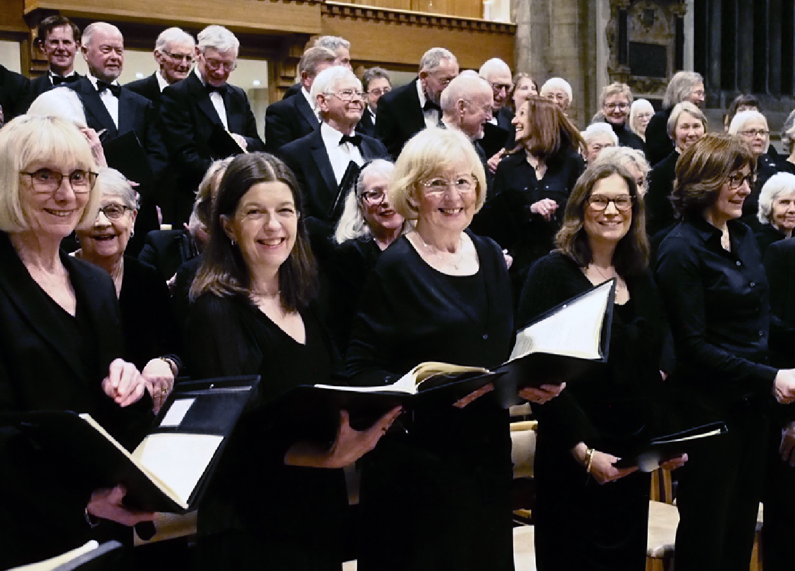
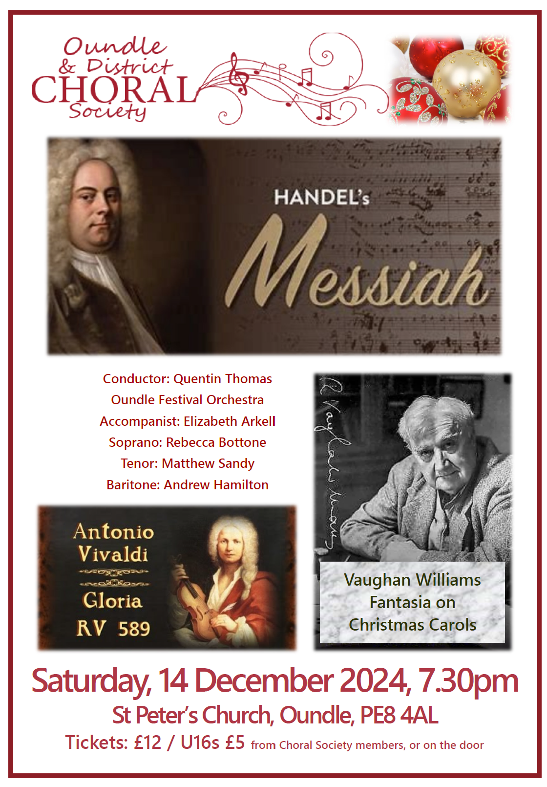

We are a mixed voice choir who have been in existence for over 100 years. We draw our membership from a fairly wide rural area and currently have approximately seventy voices who meet for rehearsals every Monday during term time.
Although we are an independent choral society, we have close links with Oundle School with whom we often perform and who regularly support our concerts. Our rehearsals are held in Laxton Junior School Hall, East Road, Oundle, PE8 4BX, from 7.30pm until 9.30pm.
There is no requirement to audition and all singers are made welcome no matter what skill level you have. We are grateful to Oundle Town Council for their continuing financial support but, much like most societies, we are a registered charity and are obliged to charge a subscription fee. However, dont let that stop you from coming along to see if you like us!
If you are interested in joining our society please contact us for more information by telephoning/emailing using the details below.
Registered charity number: 1098947





Chair: Tessa Leuchars
: Lowal
Annoyance: Nicholas Trewlawney
Maths Geek: David
Baker: Archie
Habibi: Rion
Ginger: Finn

“Cheese”
"I like music!!! :)"
"ODCS is the most friendly, relaxed and enjoyable choral society I have ever belonged to."
"I love the challenge of learning a new piece from scratch. Over the weeks, we gain confidence and learn to blend our voices and add depth and emotion to the notes on the score. Then when it all comes together in a concert performance and we bring joy to an audience, there are few greater highs in life!"
"Singing is the perfect form of exercise and relaxation, focussing your mind, whatever the day has thrown at you!"
“Singing with ODCS provides an exhilarating combination of pleasure and professionalism no matter what level of experience one has. It combines learning new skills and scores with physical and mental health and provides enjoyment, social interaction and hours of fun!”
“Like many choirs, Oundle and District Choral Society has a slight imbalance when it comes to male singers in the tenor and bass sections. So earlier this year, when the plea went out asking whether any altos might consider defecting to the tenor line, I thought, “Why not?” Having sung tenor in a previous choir, I volunteered… and so, an ODCS “talto” was born. I’m delighted I made the switch. The gentlemen have been wonderfully welcoming, and the tenor range suits my voice far better than the slightly higher alto line. Besides, if everyone is singing all the right notes in all the right places, and not like Eric Morecambe, who famously played ‘all the right notes, but not necessarily in the right order’ — nobody seems to mind too much who is singing them! Of course, we’d still love more gentlemen to join the choir and bolster the tenor and bass sections… but equally, if any altos are feeling adventurous, I can highly recommend coming over to the dark side. We may be short on numbers, but we make up for it in enthusiasm, questionable jokes, and excellent harmonies.”
Spring 2026 – Four Coronation anthems, Handel, and Dido and Aeneas, Purcell
December 2025 Ecce Novum, a musical reflection on the nativity, various works.
Spring 2025 - Mozart's Requiem KV 626, Finzi's Eclogue for piano and strings and Lo, the full final sacrifice, Parry's Blest pair of Sirens
December 2024 - Handel's Messiah, Vivaldi 's Gloria, Vaughan Williams Fantasia on Christmas carols
Spring 2023 - Karl Jenkins' The Armed Man and Rutter's Requiem
Autumn 2022 - Magnificat in D Major - J.S Bach and Mass in G Major - Franz Schubert
Spring 2022 - Dvorak's Mass in D Minor, Vaughan Williams' Five Mystical Songs and Arensen's Eja Mater
Autumn 2019 - Britten - St Nicolas, Chilcott - Time of Snow Mid Winter, Whitacre - Lux Aurumque, Rutter - Nativity, Candlelight & Shepherds Pipe Carols.
Spring 2019 - Vivaldi GLORIA & Tippett 'Five Spirituals
Autumn 2018 - G.F. Handel - Messiah Part 1
Spring 2018 - Gioacchino Rossini’s - Petite Messe Solennelle
Autumn 2017 - Benjamin Britten's - A Ceremony of Carols
Spring 2017 - Handel’s Israel in Egypt - A joint concert with Uppingham Choral Society and the Bardi Orchestra on Saturday 8th April 2017 in Uppingham
Spring 2016 - Creation by F. J. Haydn
Spring 2015 - Mass in C Minor K.427 by Mozart
Spring 2014 - Now is the Month of Maying - A Concert for May Day!
Autumn 2013 - The Nelson Mass by F. J. Haydn
Spring 2013 - Messe Solennelle by Louis Vierne (Oundle School Chapel)
Autumn 2012 - Messiah by G F Handel
Spring 2012 - The Music Makers by Edward Elgar (Peterborough Cathedral with Oundle School)
Autumn 2011 - Messa di Gloria by Giacomo Puccini
Spring 2011- Requiem by W. A. Mozart
Tessa Leuchars - Chair
Clare Jones - Secretary
Tessa Leuchars - Website